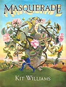
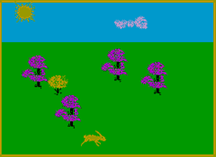

Masquerades, Geocaching, and Easter Eggs
- date
2010-04-02 12:10
- author
admin
- category
general, opinion
- tags
easter eggs, garcia, geocaching, jerry, kitt williams, treasure
- slug
masquerades-geocaching-and-easter-eggs
- status
published
Thirty years ago Kitt Williams wrote, or rather painted, the children’s book Masquerade. Each page had a picture that contained hidden clues pointing to the location of an 18-carat gold, jewel-encrusted hare buried somewhere in Britain. It sparked a National treasure hunt and sold 2 million copies.
I remember being fascinated with the pictures and the theories and solutions bandied about by those older and wiser than I. The majority of programmers seem to have a fondness for puzzles and riddles, and the beauty and success of the book was that it involved transposing clues to maps and real-world locations.
Geocaching
Geocaching could be seen as a successor to Williams’s book. As someone working in technology and geography it should seemingly be an ideal pastime. However the fact geocaching is a trademarked word owned by a company named Groundspeak kills a little of the mystique. Secondly it appears to me to be the equivalent of driving around in the middle of nowhere with a bad in-car GPS trying to find an address that’s missing from the database.
I wouldn’t go as far as police Inspector Tyrus Cameron who mistook a geocache for a bomb and was quoted as saying:
“They can have their fun, but we can’t be responding in this nature, or it’s a huge issue for the citizens of the city.”
But it does seems to be a mechanical process with little puzzle-solving involved. As I’ve never tried it my opinion clearly counts for little, and I’m open to persuasion.
Easter Eggs
In keeping with the theme of buried secrets and Easter, I’m wondering if the programmer tradition of inserting Easter Eggs into software is now extinct. Microsoft have hidden many eggs over the years, but now officially ban the practice to calm corporate security concerns. And where Microsoft lead, desktop GIS will undoubtedly follow.
Previously typing Jerry in ArcMap version 8.x would pop up an image of the man himself. This has been “fixed” from version 9.1 on as it seemingly caused issues for several users while editing.
Google Maps has a few Easter Eggs, and this year the Australian site gave directions and toll information in Aussie dialect for April Fool’s Day - “Ya might have to cough up some cash along here.” Due to the nature of web applications, and Google’s now familiar quirky approach, they aren’t as as much of a thrill to find as a mode staid GIS application. FME have the odd one-liner in their geo-processing output, and hopefully there are still a few treasures to be found, and a few treasures to place.
Riddle Me This
- 
Even in 1984 this game only got 3/10
On my trip down memory lane I found a riddle. A copy of Hareraiser (and Spectrum emulator) for the answer.
- *There came four men from out the wood
Their way was straight and their strength was good Then over a bridge the four men ran To come together as one man There came a horse without a bone That made the four men whine and moan Wood and men and bridge are all but one Put them together and you’ll find my riddle is undone.*
- orphan
Comments
1. Kena Eacho **
It completely depends on the quality of the provider. Any technology can be done properly or bungled badly. A virtual private server can be as oversubscribed as shared hosting.
ReplyAdd Comment